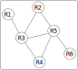

Protocoles de routage#
Topologie d’un réseau#
Les routeurs sont des dispositifs qui permettent la communication entre les appareils terminaux se trouvant dans un réseau.
On a les routeurs d’accès à un réseau dans lequel les machines sont reliées entre elles à l’aide de switchs eux-mêmes reliés au routeur.
On a les routeurs d’interconnexion de réseau, c’est à dire des routeurs reliés à d’autres routeurs pour interconnecter différents réseaux.
On appelle topologie d’un réseau l’interconnexion de ces routeurs entre eux et les différents réseaux qu’ils relient.
Exemple
On considère la topologie réseau suivante: 6 routeurs et 2 réseaux locaux.
Le réseau local a une adresse réseau
192.168.1.0/24.Cela signifie que le masque de réseau est
255.255.255.0autorisant 256 adresses IP. Le routeur R1 dispose d’une adresse IP dans ce réseau local pour être accessible depuis toutes les machines du réseau.L’adresse réseau entre les routeurs R1 et R3 a pour valeur
10.1.1.0/30.Le masque de réseau est
255.255.255.252autorisant seulement 4 adresses IP. Par exemple, pour l’adresse réseau10.1.1.0, on a les adresses10.1.1.1,10.1.1.2et10.1.1.3qui sera utilisée pour le broadcast. Par conséquent 2 adresses IP peuvent être attribuées sur ce réseau aux routeurs R1 et R3.
{kind=link}
On représente souvent la topologie d’un réseau plus simplement par un graphe dans lequel :
Chaque sommet du graphe représente un routeur
Chaque arête du graphe représente une connexion entre 2 routeurs.
Dans le cas d’un graphe pondéré, le poids sur une arête représente le coût ou la distance entre 2 routeurs.
Exemple
La topologie réseau de l’exemple précédent peut se représenter par le graphe suivant:
{kind=link}
Le graphe a 6 sommets et 7 arêtes.
Les sommets du graphe représentent les routeurs R1, R2, R3, R4, R5 et R6.
Les arêtes représentent les liens entre les routeurs.
Protocole de routage#
Les routeurs utilisent un protocole pour communiquer entre eux, assurant ainsi l’acheminement des données entre les machines de deux réseaux distants. Chaque routeur a une connaissance du réseau auquel il appartient. Ces données sont rassemblées dans une table de routage qui comprend notamment :
les adresses réseaux de destination avec lesquelles il peut communiquer;
les passerelles (routeurs) qui permettent d’accéder aux réseaux;
les interfaces réseaux sur lesquelles il faut envoyer les données.
les coûts pour optimiser l’acheminement des données : ce coût dépend du débit de la connexion ou du nombre de routeurs à traverser pour arriver à destination.
Il existe de nombreux protocoles de routage. On s’intéressera à deux protocoles qui sont RIP et OSPF.
Les tables de routages sont régulièrement mises à jour grâce à des algorithmes:
Le protocole RIP utilise l’algorithme de Bellman-Ford pour découvrir la topologie du réseau.
Le protocole OSPF utilise l’algorithme de Dijkstra pour déterminer la route la plus rapide
Protocole RIP#
Le protocole RIP détermine le trajet à suivre pour la transmission de données à partir du nombre de routeurs à traverser pour atteindre le destinataire. Chaque routeur traversé est un saut.
Chaque routeur dispose d’une table de routage qui contient les informations sur les routeurs avec lesquels il communique. La table de routage se construit en plusieurs étapes.
Au début, un routeur complète sa table de routage avec ses voisins immédiats. Il mémorise les réseaux directement reliés à lui, les interfaces utilisées puis met chaque distance (saut) à 1.
Ensuite, il échange régulièrement sa table avec ses voisins et complète ou met à jour sa table de routage avec les informations détenues par les routeurs voisins.
Au bout d’un certain temps, la table de routage d’un routeur se stabilise et dispose des informations sur tout le réseau.
Exemple
On reprend la topologie réseau de l’exemple précédent.
La table de routage du routeur R1 en découvrant le réseau dispose de la table de routage suivante:
Destination |
Passerelle |
Interface |
Distance |
|---|---|---|---|
10.1.1.0/30 |
eth0 |
1 |
|
192.168.1.0/24 |
wlan0 |
1 |
Après un certain temps, la table se stabilise et contient les informations suivantes:
Destination |
Passerelle |
Interface |
Distance |
|---|---|---|---|
10.1.1.0/30 |
eth0 |
1 |
|
192.168.1.0/24 |
wlan0 |
1 |
|
10.1.2.0/30 |
10.1.1.2 |
eth0 |
2 |
10.1.3.0/30 |
10.1.1.2 |
eth0 |
2 |
10.1.4.0/30 |
10.1.1.2 |
eth0 |
2 |
10.1.7.0/30 |
10.1.1.2 |
eth0 |
3 |
192.168.1.0/24 |
10.1.1.2 |
eth0 |
4 |
Un routeur qui reçoit les informations d’un routeur voisin suit les 4 règles du protocole RIP:
il découvre une nouvelle route inconnue vers un sous réseau inconnu, il ajoute à sa table;
Il découvre une route plus courte vers un sous-réseau connu, mais passant par un nouveau routeur. L’ancienne route est remplacée par la nouvelle;
Il reçoit une nouvelle route plus longue vers un sous-réseau connu, il l’ignore;
Il reçoit une route plus longue vers un routeur passant par le même voisin, cela signifie qu’un problème est survenu sur l’ancienne route. Il met à jour sa table avec cette nouvelle route.
Lorsqu’un routeur reçoit une route, il faut augmenter la distance de 1, soit pour la comparer aux autres routes, soit pour l’ajouter à sa table. Les distances indiquent le nombre de routeurs traversés pour accéder à un sous réseau. Lorsque la distance est supérieure à 15, la route est effacée de la table.
Important
Lorsqu’une panne survient sur le réseau, comme la rupture de communication entre 2 routeurs, les routeurs qui perdent la connexion envoient l’information aux autres routeurs avec un coût supérieur à 15 (en général 16) pour que les autres routeurs mettent à jour leurs tables. Il remplacent la route rompue par une autre route, certes plus longue que l’ancienne, mais qui permet d’acheminer les données.
Protocole OSPF#
Le protocole OSPF (Open Shortest Path First) est adapté pour de très grands réseaux. Les réseaux sont découpés en zones et le protocole OSPF gère chaque zone. Ensuite il gère le routage entre les zones.
La principale différence avec le protocole RIP est la prise en compte de la rapidité de transmission de l’information. L’algorithme de Dijkstra permet de déterminer la route la plus courte entre 2 routeurs.
{kind=link}
Comme pour le protocole RIP, les routeurs échangent leurs informations et mettent à jour leurs tables de routage. Le protocole OSPF calcule le coût d’une liaison avec ses routeurs voisins.
Le coût d’une liaison se calcule avec la relation \(\dfrac{10^{8}}{d}\) où d est le débit de la liaison donnée en bit par seconde (bit/s).
Exemple
Reprenons le réseau de l’exemple précédent en le représentant par un graphe pondéré.
{kind=link}
On connait le débit entre le routeur R1 et R2 :
10 Mbits/s = \(10 \times 10^{6}\) bits/s soit \(10^{7}\) bits/s.
Donc le coût de la liason est \(\dfrac{10^{8}}{10^{7}}=10\).
L’algorithme de Dijkstra permet de déterminer la route la moins couteuse entre 2 routeurs, c’est à dire celle qui a le coût le plus faible et donc la plus rapide en débit.
Exemple
R1 |
R2 |
R3 |
R4 |
R5 |
R6 |
R7 |
Sommet fixé |
|---|---|---|---|---|---|---|---|
0 |
\(\infty\) |
\(\infty\) |
\(\infty\) |
\(\infty\) |
\(\infty\) |
\(\infty\) |
R1(0) |
\(10_{R1}\) |
\(1_{R1}\) |
\(\infty\) |
\(\infty\) |
\(\infty\) |
\(\infty\) |
R3(1) |
|
\(2_{R3}\) |
\(2_{R3}\) |
\(\infty\) |
\(\infty\) |
\(\infty\) |
R2(2) |
||
\(2_{R3}\) |
\(\infty\) |
\(\infty\) |
\(\infty\) |
R4(2) |
|||
\(3_{R4}\) |
\(3_{R4}\) |
\(\infty\) |
R5(3) |
||||
\(3_{R4}\) |
\(13_{R5}\) |
R6(3) |
|||||
\(3.1_{R6}\) |
R7(3.1) |
La route la plus courte est donc \(R1 \longmapsto R3 \longmapsto R4 \longmapsto R6 \longmapsto R7\) qui a un coût de \(3,1\).